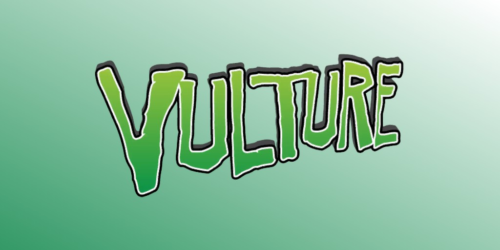
Le Vautour (Adrian Toomes) (Terre-616)
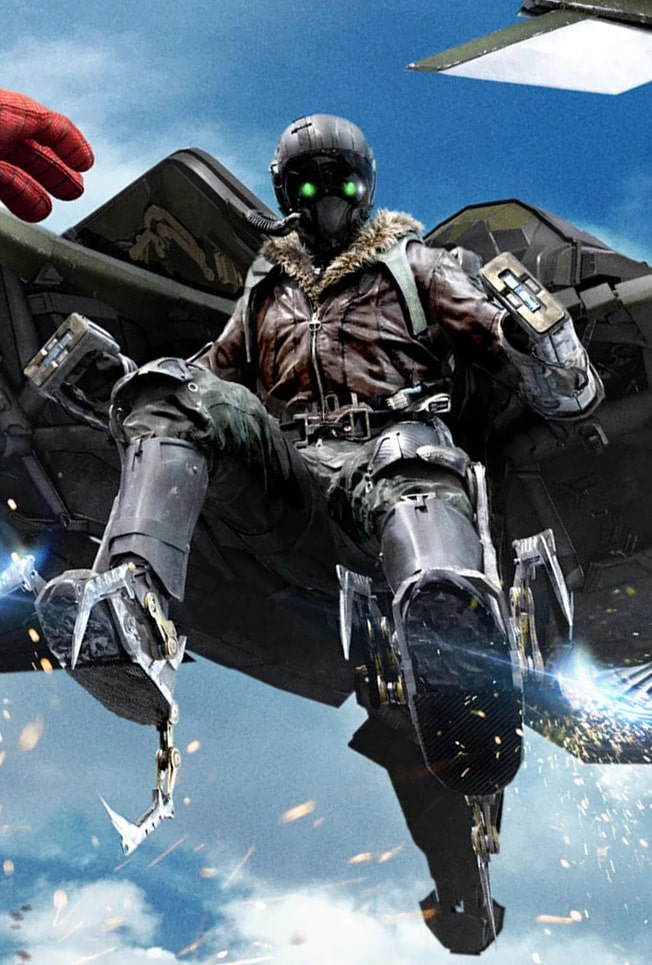
Origines :
Les parents d'Adrian décédèrent durant sa petite enfance.
Élevé par son frère aîné Marcus, Adrian était considéré comme intelligent par ses professeurs.
Suite à un accident de moto, son frère Marcus devint paraplégique et Adrian dut prendre soin de lui.
Adulte, Adrian devint ingénieur électricien et inventeur.
Avec son associé Gregory Bestman, il fonda Bestman et Toomes, une petite entreprise d'électronique.
C'est durant cette période qu'il mit au point un harnais électromagnétique permettant à son utilisateur de voler.
Mais l'enthousiasme de Toomes pour son invention fut de courte durée : il découvrit que Bestman détournait des fonds de la société.
Lors d'une altercation dans le bureau de Bestman, Toomes constata que le contact avec le harnais augmentait sa force.
Bestman licencia Adrian pour agression et prit le contrôle total de l'entreprise.
Suite à ça, Toomes se retira dans une ferme de Staten Island et continua de travailler sur son harnais.
Entre-temps, Bestman décida de vendre l'entreprise.
C'est en l'apprenant que Toomes adopta l'identité du Vautour, et saccagea le bureau de Bestman pour récupérer son argent.
L'expérience lui ayant plu, Toomes décida de devenir un criminel costumé à plein temps.
Lors d'une de ses premières missions en tant que Vautour, Toomes a braqué la Bourse du Diamant de Park Avenue, après avoir annoncé publiquement que ce serait le lieu de son prochain coup.
Alors que tous les regards étaient braqués sur le toit du bâtiment, s'attendant à ce que le Vautour frappe du ciel, ce dernier a surgi d'une plaque d'égout, s'est emparé d'une caisse de diamants et est reparti par les égouts de New York.
Mais Spider-Man réussit à neutraliser ses ailes grâce à un inverseur anti-magnétique de sa conception.
Le Vautour s'évada de prison et reprit ses activités criminelles.
Il affronta Spider-Man, qui constata que l'inverseur magnétique était désormais inefficace contre les ailes du Vautour.
Spider-Man fit une chute grave et se foula le bras.
Plus tard, lorsque le Vautour attaqua le Daily Bugle, Peter se changea en Spider-Man et vainquit son ennemi en immobilisant ses ailes avec sa toile.
Après avoir été vaincu, le Vautour fut approché par le Docteur Octopus pour fonder les Sinister Six.
Lui et les cinq autres membres s'unirent et attaquèrent Spider-Man séparément pour le pousser a bout, mais ils furent vaincus et Toomes retourna en prison.
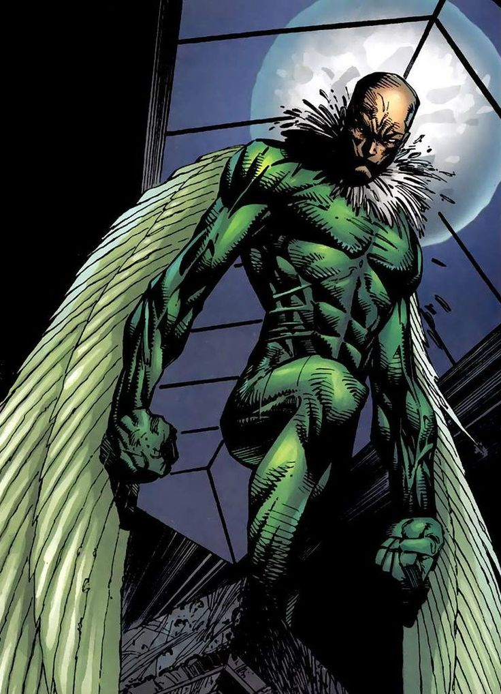
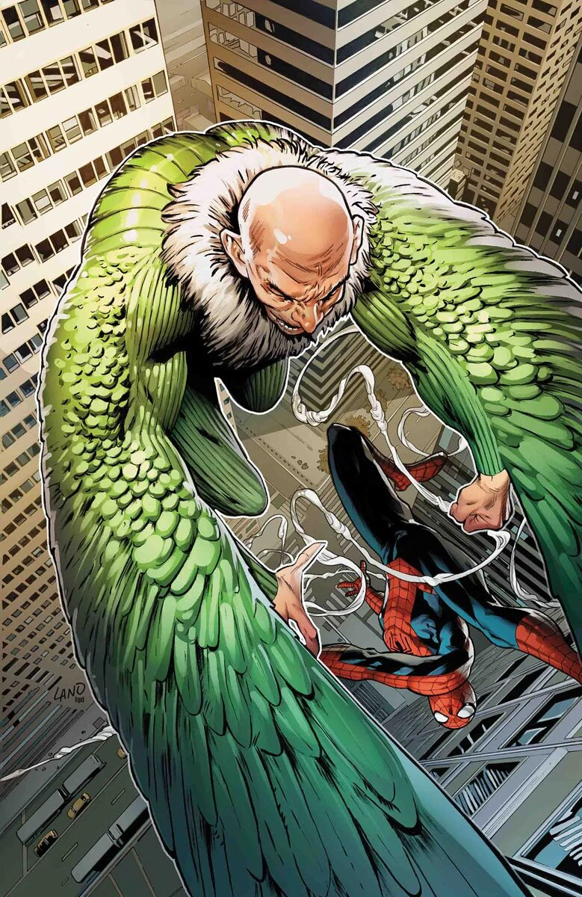
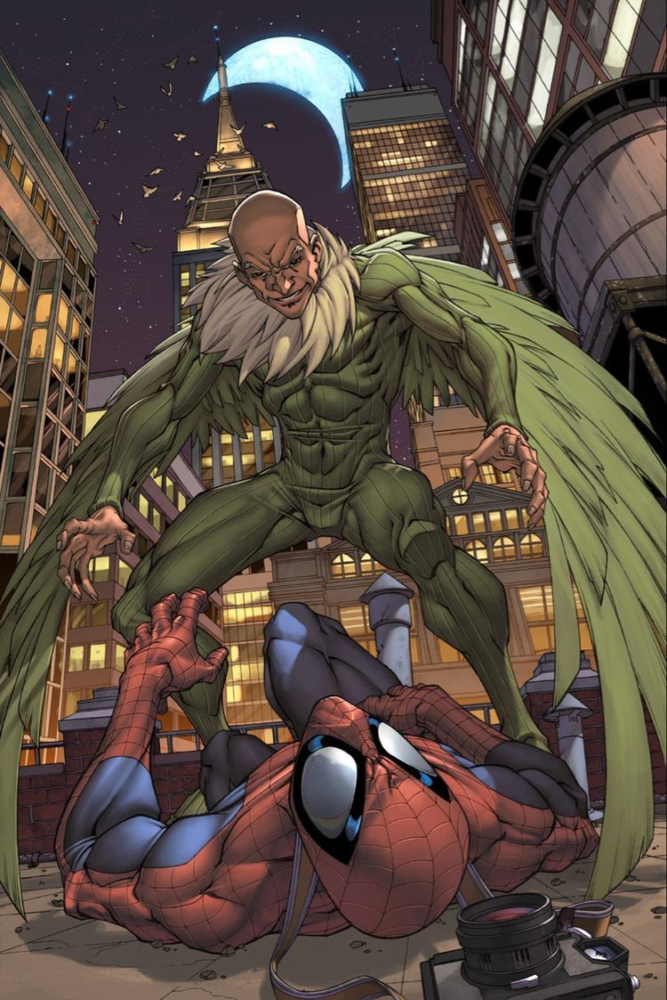
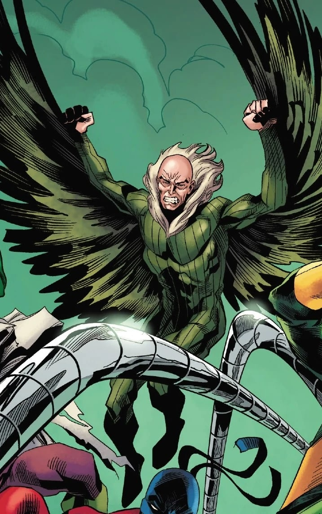
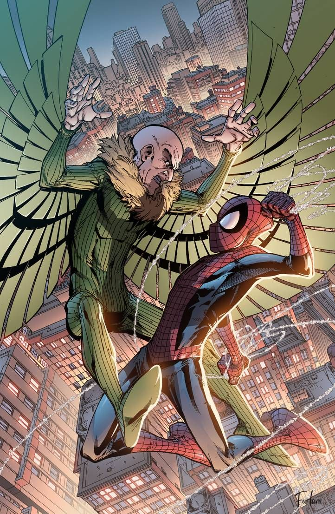
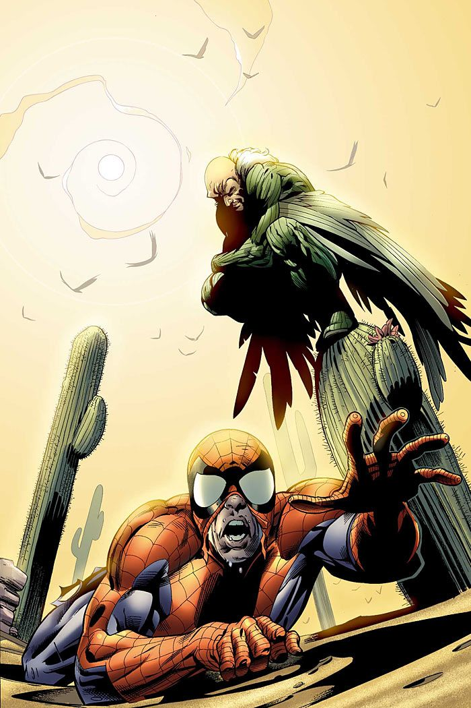

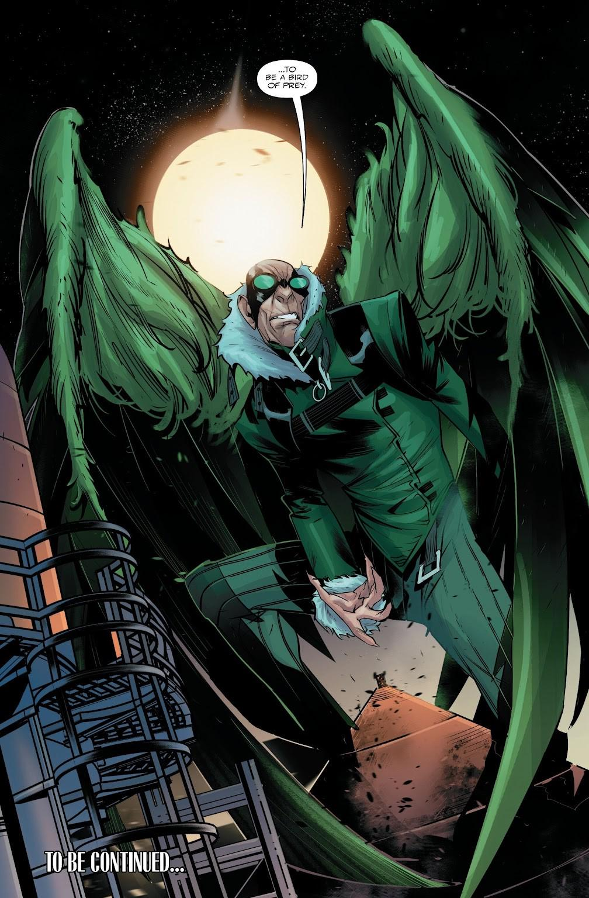
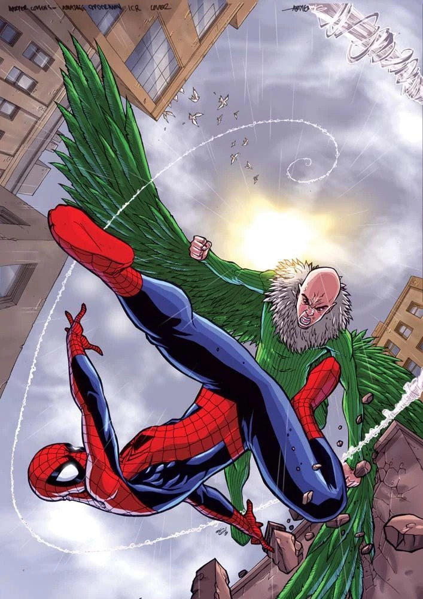
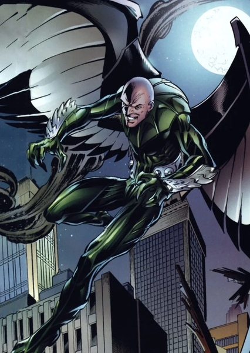
Capacités :
Adrian Toomes ne possède pas de super-pouvoirs.
Ses capacités surhumaines en tant que Vautour lui viennent du harnais électromagnétique qu'il a conçu.
Grâce à lui, il peut voler dans les airs jusqu'à 150km/h pendant six heures de suite sans se fatiguer, et jusqu'à une altitude maximale de 3 350 m.
Il peut également planer sur de très longues distances et manœuvrer en plein vol avec une étonnante précision.
Il est notamment capable de se retourner, de plonger, et d'accomplir de nombreuses acrobaties aériennes.
Le harnais accroît également sa force, lui permettant de soulever jusqu'à 350 kg.

Apparence :
Adrian Toomes est un homme âgé, chauve et mince, avec un visage anguleux, un nez crochu et des traits sévères.
Il porte une combinaison verte ajustée recouvrant tout son corps, conçu pour lui permettre d'être à l'aise dans les airs.
Il possède un harnais dans le dos, sur lequel sont fixées des ailes mécaniques articulées.
Ses ailes sont larges et souvent équipées de turbines miniaturisées.
Il arbore généralement un col blanc duveteux, fait de plumes synthétiques entourant son cou.
Équipes affiliées

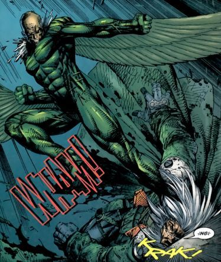
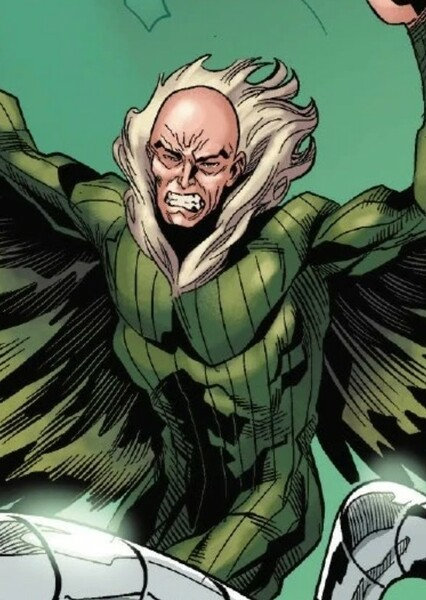
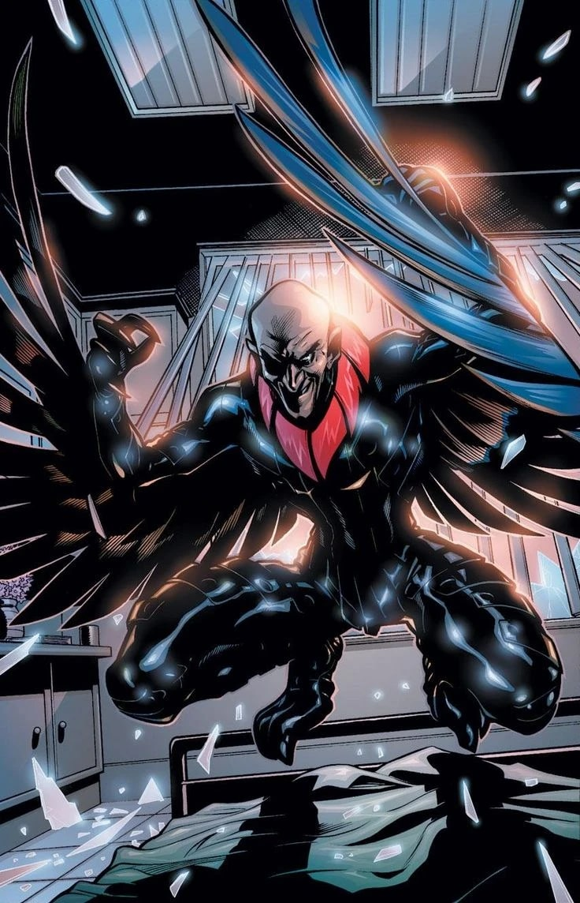
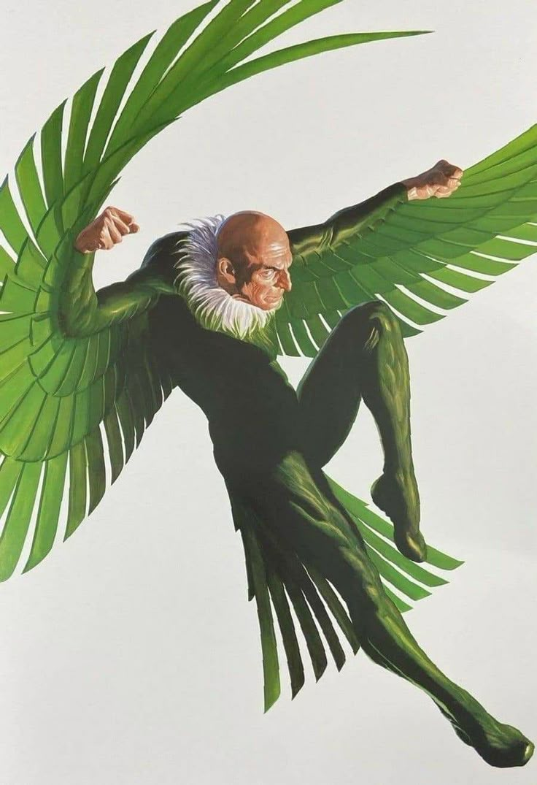
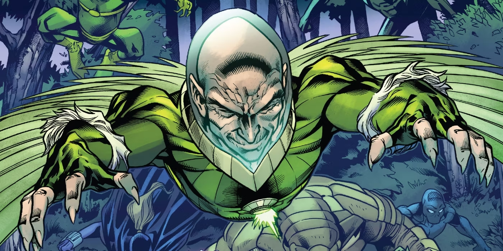